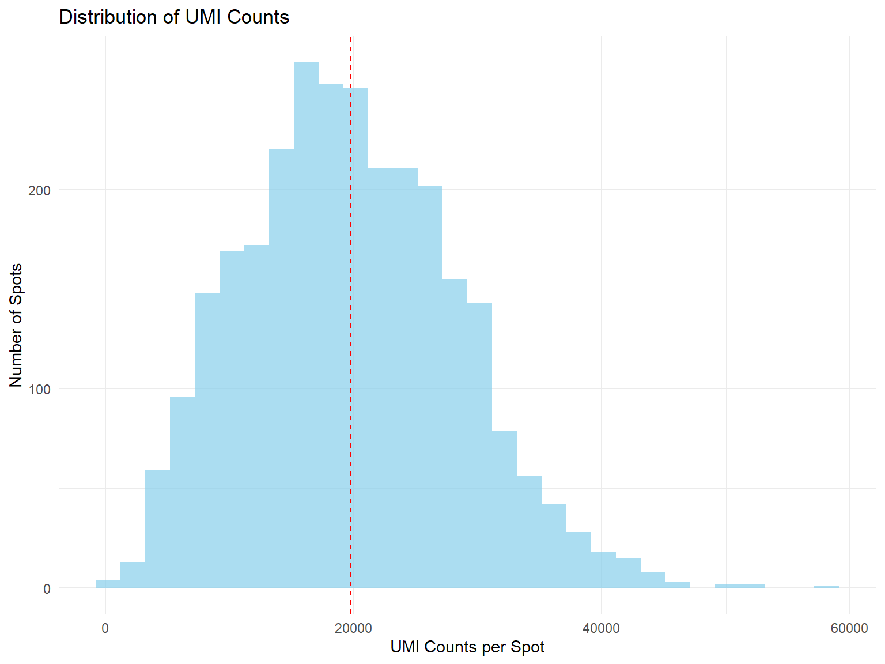
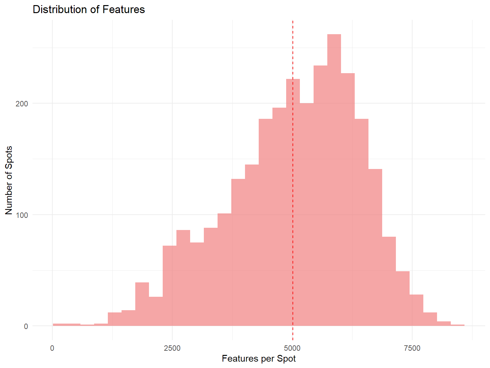
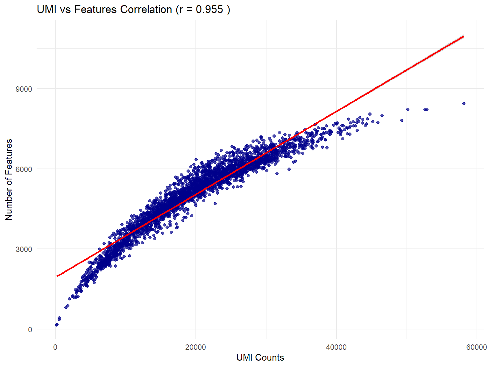
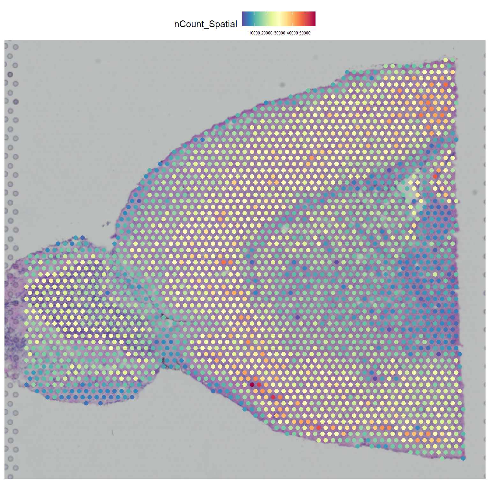
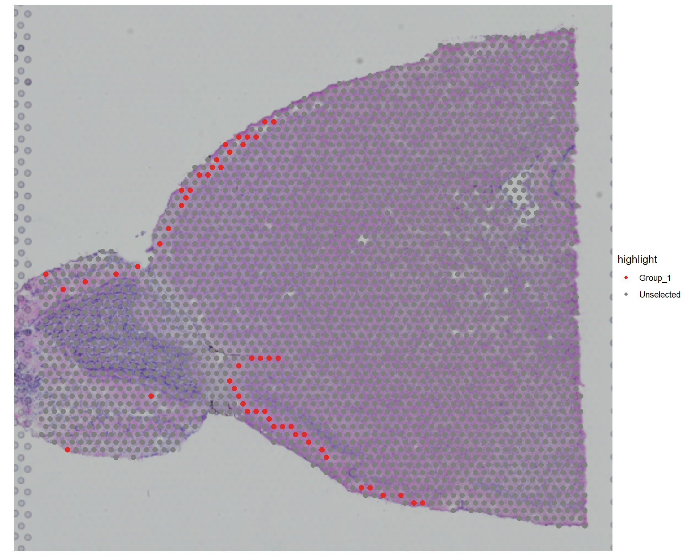
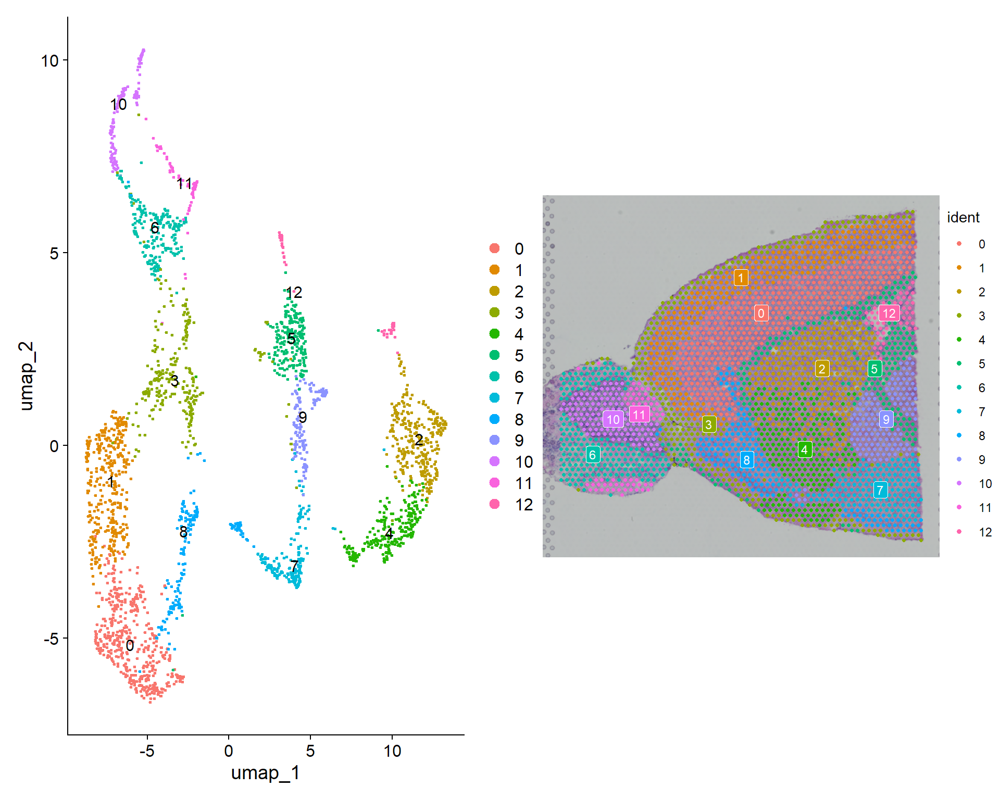
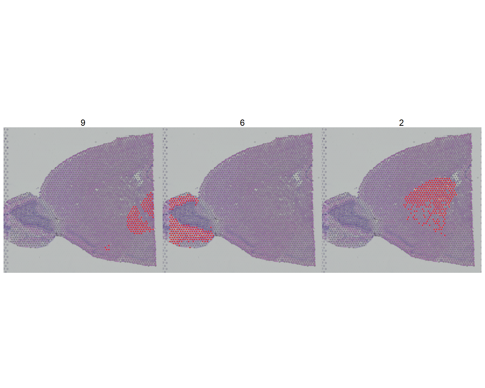

Chapter 1 Quality Control and Preprocessing
1.1 Overview
Here I analyze spatial transcriptomics data using R and Seurat. Spatial transcriptomics combines gene expression measurements with spatial information, allowing us to understand how genes are expressed in different regions of a tissue.
1.2 Key Concepts
CLICK HERE for more details
What is Spatial Transcriptomics?
- Spatial transcriptomics measures gene expression while preserving spatial information
- Each measurement point (spot) has both gene expression data and X,Y coordinates
- Enables discovery of spatially variable genes and tissue organization patterns
** Why is it Important?**
- Reveals how gene expression varies across tissue regions
- Identifies spatial patterns like gradients, clusters, and boundaries
- Helps understand tissue organization and cell-cell communication
Point of Spatial Tx
- Tissue architecture: Understand how gene expression relates to anatomical structures
- Cell-cell interactions: Identify communication patterns between neighboring cells/regions
- Spatial gene programs: Discover genes that are co-expressed in specific tissue locations
Biological Insights Only Possible with Spatial Data
Tissue organization:
- Layer-specific expression (e.g., cortical layers in brain)
- Zonation patterns (e.g., liver hepatocyte zones)
- Tumor microenvironment spatial heterogeneity
Pathological insights:
- Disease progression across tissue regions
- Immune infiltration patterns in tumors
- Fibrosis or damage spatial distribution
# Install packages if not already installed
# install.packages(c("Seurat", "Matrix", "ggplot2", "viridis", "patchwork", "dplyr"))
# install.packages(c("sp", "spdep", "spatstat", "pheatmap", "sctransform"))
# SeuratData::InstallData("stxBrain.SeuratData")
# devtools::install_github('satijalab/seurat-data')
# Load essential libraries
library(Seurat) # v5.3.1 - main spatial analysis package
library(ggplot2) # for visualization
library(dplyr) # for data manipulation
library(Matrix) # for sparse matrices
library(viridis) # for color palettes
library(patchwork) # for combining plots
library(spdep) # for spatial statistics
library(pheatmap) # for heatmaps
library(sctransform) # for SCTransform normalization
library(future) # for parallel processing
library(knitr) # for visualising tables
# Set up parallel processing for faster computation
plan("multisession", workers = 4)
# Increase the memory limit for parallel processing
options(future.globals.maxSize = 8000 * 1024^2) # Set to 4GB
# Set seed for reproducibility
set.seed(42)1.2.1 Dataset Properties
| Name | stxBrain |
| Platform | 10X Genomics Visium technology |
| Data Type | Spatial transcriptomics |
| Species | Mouse |
| Tissue | Brain: 2 serial anterior sections, 2x serial posterior sections |
1.2.2 Load Data
# Tissue slice to use
tissue="anterior2"
# Default Assay to Study
assayofInterest="Spatial"
# Load the stxBrain dataset from the local cache when available.
# For a fresh render, install SeuratData and stxBrain.SeuratData first.
tissue_cache <- file.path("cache", paste0("stxBrain_", tissue, ".RDS"))
raw_cache <- "cache/stxBrain_seurat_obj.RDS"
if (file.exists(tissue_cache)) {
seurat_obj <- readRDS(tissue_cache)
} else if (file.exists(raw_cache) && tissue %in% names(readRDS(raw_cache)@images)) {
seurat_obj <- readRDS(raw_cache)
} else {
if (!requireNamespace("SeuratData", quietly = TRUE)) {
stop("Install SeuratData and stxBrain.SeuratData, or provide the matching cache/stxBrain_<tissue>.RDS file.")
}
seurat_obj <- SeuratData::LoadData("stxBrain", type = tissue)
saveRDS(seurat_obj, tissue_cache)
}
seurat_obj <- UpdateSeuratObject(seurat_obj)
# Ensure we're working with the Spatial assay
DefaultAssay(seurat_obj) <- assayofInterest
# Preview of first 5 genes, first 5 spots
GetAssayData(seurat_obj, layer = "counts")[1:5, 1:5]## 5 x 5 sparse Matrix of class "dgCMatrix"
## AAACAAGTATCTCCCA-1 AAACACCAATAACTGC-1 AAACAGAGCGACTCCT-1
## Xkr4 . . .
## Gm1992 . . .
## Gm37381 . . .
## Rp1 . . .
## Sox17 . . 1
## AAACAGCTTTCAGAAG-1 AAACAGGGTCTATATT-1
## Xkr4 . .
## Gm1992 . .
## Gm37381 . .
## Rp1 . .
## Sox17 . .## [1] "orig.ident" "nCount_Spatial" "nFeature_Spatial" "slice"
## [5] "region" "spatial_x" "spatial_y" "percent.mt"
## [9] "nCount_SCT" "nFeature_SCT" "SCT_snn_res.0.8" "seurat_clusters"1.3 1. QC Metrics
1.3.1 1.1 Spatial Coordinates
# Ensure spatial coordinates are in metadata
spatial_coords <- GetTissueCoordinates(seurat_obj)
seurat_obj@meta.data$spatial_x <- spatial_coords$x
seurat_obj@meta.data$spatial_y <- spatial_coords$y# Check if spatial coordinates are available
cat(paste("Image dimensions:",
paste(dim(seurat_obj@images[[tissue]]@image), collapse=" x " ) ))## Image dimensions: 599 x 600 x 3Explanation image dimensions are height x width x channels (typically RGB)
Spatial Coordinates also give you an idea of how large the usable area of the image is.
CLICK HERE for further details
Coordinate ranges tell you:
- Tissue size: Large ranges suggest full tissue capture
- Resolution: Coordinate spacing indicates spot density
- Orientation: Proper tissue mounting and imaging
Red flags:
- Narrow ranges: Possible tissue trimming or capture issues
- Irregular patterns: Potential array or imaging problems
- Missing regions: Incomplete tissue coverage
Spatial coordinates guide for downstream planning:
- Region-of-interest selection for focused analysis
- Spatial clustering to identify tissue domains
- Trajectory analysis across tissue gradients
- Ligand-receptor analysis between neighboring spots
# Display spatial information
if("images" %in% slotNames(seurat_obj)) {
# Get tissue coordinates
print(paste("Spatial coordinate range - X:", round(min(spatial_coords$x), 2), "to", round(max(spatial_coords$x), 2)))
print(paste("Spatial coordinate range - Y:", round(min(spatial_coords$y), 2), "to", round(max(spatial_coords$y), 2)))
}## [1] "Spatial coordinate range - X: 1578 to 10113"
## [1] "Spatial coordinate range - Y: 2219 to 10004"Verdict: is sufficiently large.
1.3.2 1.2 Seurat object summary
# Sum up counts in each column / spot
seurat_obj@meta.data$nCount_Spatial <- Matrix::colSums(GetAssayData(seurat_obj, layer = "counts"))
# Sum up number of genes with non zero count in each column/spot
seurat_obj@meta.data$nFeature_Spatial <- Matrix::colSums(GetAssayData(seurat_obj, layer = "counts") > 0)
print(seurat_obj)## An object of class Seurat
## 48551 features across 2825 samples within 2 assays
## Active assay: Spatial (31053 features, 0 variable features)
## 1 layer present: counts
## 1 other assay present: SCT
## 2 dimensional reductions calculated: pca, umap
## 1 spatial field of view present: anterior21.3.3 1.3 Basic Dataset Dimensions
These statistics tell you about the overall size and filtering effects of your dataset.
CLICK HERE for further details
Number of features (genes): How many genes passed your min.cells filter (genes expressed in ≥3 spots)
- Good range: 10,000-20,000+ for human/mouse. 20k for protein coding
- Red flags: <5,000 (too strict filtering) or >25,000 (too permissive filtering unless there is high sequencing depth/ highly complex tissue like brain)
Number of samples (spots): How many spots passed your min.features filter (spots with ≥200 genes)
- Good range: Depends on platform (Visium ~3,000-5,000 spots)
- Red flags: Many spots lost = poor tissue quality
## [1] 31053## [1] 2825Verdict: stxBrain is a deeply sequenced high quality spatial data. Therefore, high Number of features is not abnormal.
1.3.4 1.4 Sequencing Depth
This shows the overall sequencing effort and depth across your entire dataset.
CLICK HERE for further details
Total UMI counts: Overall sequencing depth across all spots
- Good range: Millions to tens of millions depending on dataset size
- Red flags: Very low counts = under-sequenced library
# Total UMI counts (formatted)
format(sum(GetAssayData(seurat_obj, layer = "counts"))
, big.mark = ",")## [1] "55,880,100"Verdict: Mouse brain tissue typically shows moderate-to-high UMI counts, therefore, this count is not abnormal.
1.3.5 1.5 UMI Counts per Spot
This measures the sequencing depth per individual spot - a key quality metric.
CLICK HERE for further details
What it means: Average number of UMI (unique molecular identifiers) detected per spot
- Good range: 1,000-10,000 UMI per spot (varies by platform and tissue)
- Upper bound: 15,000-20,000+ UMIs (high-quality/dense tissue)
- Red flags: <500 (poor capture efficiency) or >20,000 (possible doublets/artifacts)
- Why it matters: Low UMI = poor data quality; too high = potential technical artifacts
data.frame(
`**Mean**`= round(mean(seurat_obj@meta.data$nCount_Spatial), 2)
, `**Median**`= round(median(seurat_obj@meta.data$nCount_Spatial), 2)
, `**Min**`=min(seurat_obj@meta.data$nCount_Spatial)
, `**Max**`=max(seurat_obj@meta.data$nCount_Spatial)
, `**Standard deviation**`= round(sd(seurat_obj@meta.data$nCount_Spatial), 2)
, check.names = F
) %>% t() %>% knitr::kable()| Mean | 19780.57 |
| Median | 19274.00 |
| Min | 199.00 |
| Max | 58134.00 |
| Standard deviation | 8495.21 |
Verdict: We see high average UMI counts per spot. As long as this is highly correlated with average features per spot we can interpret this as stxBrain being a dense deeply sequenced dataset.
1.3.6 1.5.1 Low UMI Spots
A spot with low UMI might indicate - Poor tissue quality at that location - Technical failure during library prep - Spot located on tissue edge or artifact
CLICK HERE for further details
How to interpret Spots with <500 UMI - <5%: Excellent quality, minimal filtering needed - 5-15%: Good quality, standard filtering recommended - 15-30%: Moderate quality, careful filtering required - >30%: Poor quality dataset, investigate technical issues
How to interpret Spots with <500 UMI - <10%: Excellent quality - 10-20%: Good quality, standard filtering - 20-40%: Moderate quality, may need adjusted thresholds - >40%: Poor quality, consider dataset viabilitylow_umi_spots <- sum(seurat_obj@meta.data$nCount_Spatial < 500)
low_feature_spots <- sum(seurat_obj@meta.data$nFeature_Spatial < 250)# Spots with <500 UMI:
paste(low_umi_spots, "(", round(100*low_umi_spots/ncol(seurat_obj), 1), "%)")## [1] "2 ( 0.1 %)"# Spots with <250 features:
paste(low_feature_spots, "(", round(100*low_feature_spots/ncol(seurat_obj), 1), "%)")## [1] "2 ( 0.1 %)"Verdict: 2 spots have low UMI and features. Consider for filtering.
1.3.7 1.6 Features (Genes) per Spot
This measures gene detection efficiency per spot.
CLICK HERE for further details
What it means: Average number of genes detected per spot
- Good range: 500-5,000 genes per spot (varies by tissue complexity)
- Red flags: <300 (poor quality spots with low gene detection)
- Why it matters: More genes detected = better representation of cell state
data.frame(
`**Mean**`= round(mean(seurat_obj@meta.data$nFeature_Spatial), 2)
, `**Median**`= round(median(seurat_obj@meta.data$nFeature_Spatial), 2)
, `**Min**`=min(seurat_obj@meta.data$nFeature_Spatial)
, `**Max**`=max(seurat_obj@meta.data$nFeature_Spatial)
, `**Standard deviation**`= round(sd(seurat_obj@meta.data$nFeature_Spatial), 2)
, check.names = F
) %>% t() %>% knitr::kable()| Mean | 5015.13 |
| Median | 5173.00 |
| Min | 159.00 |
| Max | 8447.00 |
| Standard deviation | 1379.98 |
Verdict: We see high average genes per spot. As long as this is highly correlated with average UMI per spot we can interpret this as stxBrain being a dense deeply sequenced dataset.
1.3.8 1.6.1 Low Feature Spots
This analyzes how many spots each gene is detected in.
CLICK HERE for further details
What it means: Distribution of gene detection across spots
- Normal pattern: Many genes in <5% spots (tissue-specific), some in >50% spots (housekeeping)
- Red flags: Very few genes in >50% spots = possible quality issues
- Why it matters: Helps identify rare vs common genes
# Sum up number of spots where a gene has non-zero count
gene_detection_rates <- Matrix::rowSums(GetAssayData(seurat_obj, layer = "counts") > 0)
data.frame(
`**Genes detected in >50% of spots:**` = sum(gene_detection_rates > ncol(seurat_obj)/2)
, `**Genes detected in >10% of spots:**` = sum(gene_detection_rates > ncol(seurat_obj)/10)
, `**Genes detected in <5% of spots:**` = sum(gene_detection_rates < ncol(seurat_obj)/20)
, check.names=F
) %>% t() %>% knitr::kable()| Genes detected in >50% of spots: | 4099 |
| Genes detected in >10% of spots: | 10781 |
| Genes detected in <5% of spots: | 18883 |
Verdict: Housekeeping genes make up smallest group, gene detection seems normal.
1.3.9 1.7 UMI vs Features Correlation
True test of whether average UMI and gene per spot makes sense, is to see if the two values are properly correctly.
CLICK HERE for further details
What it means: Correlation between UMI counts and number of genes detected
- Good range: 0.7-0.95 (strong positive correlation)
- Red flags: <0.5 (data quality issues) or >0.98 (too linear, possible artifacts)
- Why it matters: Should be positive - more UMI should mean more genes detected
umi_feature_cor <- cor(seurat_obj@meta.data$nCount_Spatial, seurat_obj@meta.data$nFeature_Spatial)
print(paste("Correlation coefficient:", round(umi_feature_cor, 3)))## [1] "Correlation coefficient: 0.955"Verdict: Strong positive correlation means we have a high quality deeply phenotyped dataset
1.3.10 1.8 Outlier Detection
This identifies spots with unusual UMI or feature counts using statistical methods.
CLICK HERE for further details
What it means: Spots with values outside 1.5×IQR (interquartile range) from quartiles
- Good range: <5% outliers
- Red flags: >10% outliers may indicate technical problems
- stxBrain context: Brain tissue may have natural biological outliers (e.g., high-activity neurons)
- Why it matters: Outliers may represent technical artifacts or biological extremes
# UMI outliers using 1.5 * IQR rule
Q1_umi <- quantile(seurat_obj@meta.data$nCount_Spatial, 0.25)
Q3_umi <- quantile(seurat_obj@meta.data$nCount_Spatial, 0.75)
IQR_umi <- Q3_umi - Q1_umi
umi_outliers <- sum(seurat_obj@meta.data$nCount_Spatial < (Q1_umi - 1.5*IQR_umi) |
seurat_obj@meta.data$nCount_Spatial > (Q3_umi + 1.5*IQR_umi))
# Feature outliers
Q1_feat <- quantile(seurat_obj@meta.data$nFeature_Spatial, 0.25)
Q3_feat <- quantile(seurat_obj@meta.data$nFeature_Spatial, 0.75)
IQR_feat <- Q3_feat - Q1_feat
feat_outliers <- sum(seurat_obj@meta.data$nFeature_Spatial < (Q1_feat - 1.5*IQR_feat) |
seurat_obj@meta.data$nFeature_Spatial > (Q3_feat + 1.5*IQR_feat))
# UMI outliers (1.5×IQR rule)
paste(umi_outliers, "spots (", round(100*umi_outliers/ncol(seurat_obj), 1), "%)")## [1] "14 spots ( 0.5 %)"# Feature outliers (1.5×IQR rule)
print(paste(feat_outliers, "spots (", round(100*feat_outliers/ncol(seurat_obj), 1), "%)"))## [1] "13 spots ( 0.5 %)"Verdict: Very few spots have abnormal UMI / feature counts (less than 0.5%) .
1.3.11 1.9 Sparsity Analysis
This measures how many zero values are in your expression matrix.CLICK HERE for further details
What it means: Percentage of zero values in the expression matrix
- Normal range: 85-95% for single-cell/spatial data
- Why it’s normal: Biological - most genes aren’t expressed in most spots
- stxBrain context: Brain tissue sparsity reflects cell type diversity and regional specialization
- Red flags: Extremely high (>98%) or low (<80%) sparsity
total_possible_counts <- nrow(seurat_obj) * ncol(seurat_obj)
actual_nonzero_counts <- sum(GetAssayData(seurat_obj, layer = "counts") > 0)
sparsity <- 1 - (actual_nonzero_counts / total_possible_counts)## [1] "83.8 %"## [1] "14,167,739"## [1] "87,724,725"Verdict: Observed is within normal range (85-95%)
1.4 2. Quality Control Visualizations
These plots help you visually assess data quality and identify potential issues that might not be obvious from summary statistics alone.
1.4.1 2.1 Plot 1: Distribution of UMI Counts (Histogram)
What to look for:CLICK HERE for further details
- Good pattern: Bell-shaped or slightly right-skewed distribution
- Peak position: Should align with your expected UMI range (1,000-10,000)
- Width: Moderate spread indicates consistent sequencing
Red flags:
- Bimodal distribution: Two peaks suggest batch effects or mixed quality
- Very wide distribution: Inconsistent sequencing depth
- Long left tail: Many low-quality spots
- Extreme outliers: Spots with very high/low UMI counts
# Distribution of UMI counts
ggplot(
seurat_obj@meta.data # metadata
, aes(x = nCount_Spatial) # UMI counts
) +
geom_histogram(
bins = 30 # number of bins
, fill = "skyblue" # fill color
, alpha = 0.7 # transparency
) +
geom_vline(
xintercept = mean(seurat_obj@meta.data$nCount_Spatial) # mean line
, color = "red" # line color
, linetype = "dashed" # line type
) +
labs(
title = "Distribution of UMI Counts" # title
, x = "UMI Counts per Spot" # x-axis label
, y = "Number of Spots" # y-axis label
) +
theme_minimal()
Verdict: Bell-shaped with moderate spread. Peak is higher than expected due to deep high quality sequencing1.4.2 2.2 Plot 2: Distribution of Features (Histogram)
What to look for:CLICK HERE for further details
- Good pattern: Similar to UMI distribution, bell-shaped
- Peak position: Should be in 500-5,000 range
- Relationship to UMI: Should mirror UMI distribution shape
Red flags:
- Shifted left: Low gene detection across spots
- Multiple peaks: Suggests different spot types or quality issues
- Very narrow: All spots have similar gene counts (unusual)
- Plateau: Flat distribution suggests technical problems
# Distribution of features
ggplot(
seurat_obj@meta.data # metadata
, aes(x = nFeature_Spatial) # feature counts
) +
geom_histogram(
bins = 30 # number of bins
, fill = "lightcoral" # fill color
, alpha = 0.7 # transparency
) +
geom_vline(
xintercept = mean(seurat_obj@meta.data$nFeature_Spatial) # mean line
, color = "red" # line color
, linetype = "dashed" # line type
) +
labs(
title = "Distribution of Features" # title
, x = "Features per Spot" # x-axis label
, y = "Number of Spots" # y-axis label
) +
theme_minimal()
Verdict: Bell shaped and mirroring UMI distribution. No red flags.1.4.3 2.3 Plot 3: UMI vs Features Correlation (Scatter Plot)
What to look for:CLICK HERE for further details
- Good pattern: Clear positive linear relationship
- Tight clustering: Points cluster around regression line
- Smooth increase: More UMI consistently = more features
- R-value: Should be 0.7-0.95 (shown in title)
Red flags:
- Scattered points: Weak correlation (r < 0.5)
- Curved relationship: Non-linear suggests technical issues
- Outliers: Points far from regression line
- Plateaus: Features stop increasing with UMI (saturation issues)
- Multiple clusters: Distinct spot populations
# UMI vs Features correlation plot
ggplot(
seurat_obj@meta.data # metadata
, aes(x = nCount_Spatial, y = nFeature_Spatial) # UMI vs features
) +
geom_point(
alpha = 0.7 # transparency
, color = "darkblue" # point color
) +
geom_smooth(
method = "lm" # linear regression
, color = "red" # line color
, se = TRUE # show confidence interval
) +
labs(
title = paste("UMI vs Features Correlation (r =", round(umi_feature_cor, 3), ")")
, x = "UMI Counts" # x-axis label
, y = "Number of Features" # y-axis label
) +
theme_minimal()
Verdict: Clear positive relationship. NOTE: Might want to check image to understand why there is a curve.1.4.4 2.4 Plot 4: Spatial Distribution of UMI Counts
What to look for:CLICK HERE for further details
- Good pattern: Relatively even distribution across tissue
- Biological gradients: Gradual changes that make biological sense
- Consistent regions: Similar areas have similar UMI counts
Red flags:
- Sharp boundaries: Abrupt changes suggest technical artifacts
- Edge effects: Lower quality at tissue edges
- Batch patterns: Geometric patterns (squares, stripes) indicate batch effects
- Dead zones: Areas with consistently low UMI
- Hot spots: Isolated areas with very high UMI
- Checkerboard patterns: Alternating high/low suggests technical problems
# Spatial distribution of UMI counts
SpatialFeaturePlot(seurat_obj, features = "nCount_Spatial") +
theme(legend.text = element_text(size = 5))
1.4.5 2.5 Mitochondrial %
Dying or stressed cells lose cytoplasmic mRNA but retain mitochondrial transcripts. Therefore we can use excess mitochondrial gene expression to detect tissue degradation, while keeping in mind any caveats for spatial data.
CLICK HERE for further details
- spatial data, this can indicate tissue degradation, poor preservation, or technical artifacts during sample preparation
- Spots with high mitochondrial content may represent areas of tissue damage
- Mitochondrial genes can dominate the transcriptome in poor-quality areas, masking true biological variation
Unlike single-cell data, spatial omics adds tissue architecture context:
- Spatial patterns: High mitochondrial spots might cluster in specific tissue regions
- Tissue-dependent thresholds: Different tissue types have varying baseline mitochondrial content
- **Edge effects*:** Tissue edges often show higher mitochondrial percentages due to sectioning artifacts
# Calculate mitochondrial gene percentage
seurat_obj[["percent.mt"]] <- PercentageFeatureSet(seurat_obj, pattern = "^MT-|^mt-")
# Visualize QC metrics
p1 <- VlnPlot(seurat_obj
, features = c("nFeature_Spatial", "nCount_Spatial" , "percent.mt")
, ncol = 3
, pt.size = 0.1
, layer = "counts"
) &
theme(axis.title.x = element_blank(),
axis.text.x = element_blank(),
axis.ticks.x = element_blank())# Visualize where these spots are located
# Identify high-mito spots
high_mito_spots <- seurat_obj$percent.mt >= 30
table(high_mito_spots)## high_mito_spots
## FALSE TRUE
## 2772 53# Visualize where these spots are located
SpatialDimPlot(seurat_obj, cells.highlight = WhichCells(seurat_obj)[high_mito_spots],
cols = c("lightgray", "red"))
Verdict Mitochondrial genes with count > 30 seem to occur only on the edges. Combine this information with abnormally low UMI/feature counts to filter out low quality spots.1.5 3. Preprocessing
We use SCTransform instead of LogNormalize as you would with single cell RNA-Seq. This normalises and scales the data and finds variable genes.
CLICK HERE for further details
Important Note: For spatial transcriptomics data, Seurat recommends using SCTransform instead of LogNormalize because “standard approaches (such as the LogNormalize() function), which force each data point to have the same underlying ‘size’ after normalization, can be problematic” for spatial data where “the variance in molecular counts across spots is not just technical in nature, but also is dependent on the tissue anatomy”.
Why SCTransform for Spatial Data:
- Accounts for technical artifacts while preserving biological variance
- Handles spatial heterogeneity better than log-normalization
- Builds regularized negative binomial models of gene expression
- Replaces three steps (NormalizeData + FindVariableFeatures + ScaleData) with one
- Stores results in SCT assay for downstream analysis
# Increase the memory limit to accommodate your dataset
plan("sequential")
# Modern preprocessing workflow for spatial transcriptomics using SCTransform
# This replaces the old workflow of NormalizeData + FindVariableFeatures + ScaleData
# SCTransform normalization (recommended for spatial data)
seurat_obj <- SCTransform(
seurat_obj # Seurat object
, assay = assayofInterest # input assay name
, method = "poisson" # use poisson model for spatial data
, verbose = FALSE # reduce output
)
# Set default assay to SCT for downstream analysis
DefaultAssay(seurat_obj) <- "SCT"
plan("multisession", workers = 4)1.5.1 3.1 Dimensionality Reduction and Clustering
PCA, UMAP, k-nearest neighbor, UMAP
# Note: We use the SCT assay for all downstream steps
# 4. Perform PCA
seurat_obj <- RunPCA(
seurat_obj # Seurat object
, assay = "SCT" # use SCT assay
, verbose = FALSE # reduce output
)
# 5. Find neighbors and clusters
seurat_obj <- FindNeighbors(
seurat_obj # Seurat object
, reduction = "pca" # use PCA for neighbor finding
, dims = 1:30 # use first 30 PCs
)
# Force sequential processing (no parallelization)
plan("sequential")
# Finding Gene Clusters
# Identify clusters of cells by a shared nearest neighbor (SNN) modularity optimization based clustering algorithm. First calculate k-nearest neighbors and construct the SNN graph. Then optimize the modularity function to determine clusters.
seurat_obj <- FindClusters(
seurat_obj
#, resolution = 0.5
, verbose = FALSE
)
# 6. Run UMAP
seurat_obj <- RunUMAP(
seurat_obj # Seurat object
, reduction = "pca" # use PCA for UMAP
, dims = 1:30 # use first 10 PCs
, verbose = FALSE # reduce output
)## An object of class Seurat
## 48551 features across 2825 samples within 2 assays
## Active assay: SCT (17498 features, 3000 variable features)
## 3 layers present: counts, data, scale.data
## 1 other assay present: Spatial
## 2 dimensional reductions calculated: pca, umap
## 1 spatial field of view present: anterior21.5.2 3.2 Cluster Visualisation
We can visualise identified clusters in UMAP space or directly on the tissue slice.
p1 <- DimPlot(seurat_obj, reduction = "umap", label = TRUE)
p2 <- SpatialDimPlot(seurat_obj, label = TRUE, label.size = 3)
p1 | p2
1.5.3 3.3 Visualise specific clusters
SpatialDimPlot(seurat_obj, cells.highlight = CellsByIdentities(object = seurat_obj, idents = c(9, 6, 2)), facet.highlight = TRUE, ncol = 3)
Verdict: Spatial Clusters seem to align strongly with specific tissue regions (see region 9)